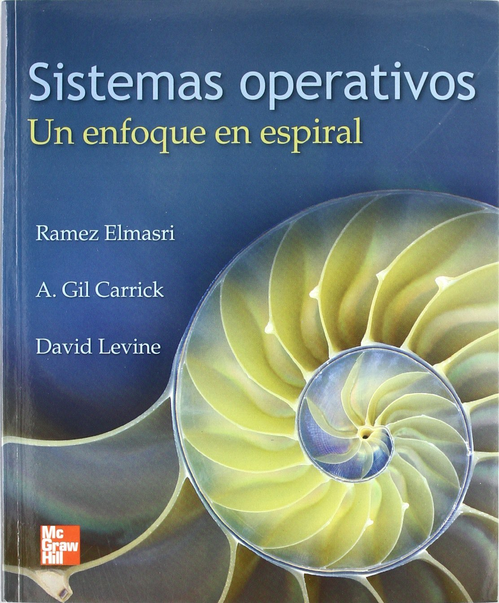

Sistemas Operativos
F.R.C.U. - U.T.N.
Datos de la cátedra
- Nombre: Sistemas Operativos.
- Código:K2327A
- Área: Computación y Comunicación de Datos.
- Régimen de Dictado: Cuatrimestral.
- Carga Horaria Semanal: 8 horas (cátedra).
- Carga Horaria Total: 128 horas (cátedra).
Mecanismos de Contacto
- Página Web: https://sofrcu.github.io/
- Google Classroom
- E-mail de los docentes.
Docentes
Ing. Gabriel Arellano
Profesor Adjunto Interino
arellanog[arroba]frcu.utn.edu.ar
Ing. Emilio Farabello
Jefe de TP Interino
farabelloe[arroba]frcu.utn.edu.ar
Horarios de Cursada
- Lunes de 18:15 a 20:30
- Jueves de 19:45 a 23:55
Horarios de Consulta
- Coordinar por mail videoconferencias de consulta
Objetivos
Preparar al alumno para diseñar sistemas de información teniendo en cuenta los servicios que brindan los sistemas operativos de propósito general.
Programa Sintético
Generalidades de Sistemas Operativos: Objetivos, Principios de Diseño, Componentes y Arquitectura. Servicios prestados por los Sistemas Operativos. Sistemas Operativos de Propósito Específico. Estudio Comparativo de Sistemas Operativos.
Programa Analítico
- Introducción a los Sistemas Operativos
- Sistemas Operativos Monoproceso
- Sistemas Operativos Multitarea de Usuario Único
- Sistemas Operativos Multitarea y Multiusuario
- Sistemas Operativos de Propósito Específico
Evaluación
Conceptual y Objetiva
Teoría, Práctica y Actividades aúlicas
Parciales, Recuperatorios, Trabajos Prácticos
Evaluación
1er. Parcial: 25/09/2024
2do. Parcial: 20/11/2024
Recuperatorios: 04/12/2024
Recursos didácticos
- Lista de lecturas.
- Presentaciones.
- Guías de Laboratorio.
- Máquinas Virtuales y Emuladores.
- Animaciones y Simuladores.
- Películas y Documentales.
Libros de Cabecera
Sistemas Operativos: Un enfoque en espiral
- Autor: Rames Elmasri y otros.
- Editorial: McGraw-Hill.
- Edición: 1era. Edición (2010).
- ISBN: 978-607-15-0309-1.
Libros de Cabecera
Sistemas Operativos: Una visión Aplicada
- Autor: Jesús Carretero y otros.
- Editorial: McGraw-Hill.
- Edición: 1era. Edición (2001).
- ISBN: 84-481-3001-4.
Otros Libros
Sistemas Operativos
- Autor: Silva, Martín.
- Editorial: Alfaomega.
- Edición: 1ra. Edición (2015).
- ISBN: 978-607-62-2577-6 .
Otros Libros
Sistemas Operativos
- Autor: McIver McHoes, Flynn.
- Editorial: Cengage Learning.
- Edición: 6ta. Edición (2011).
- ISBN: 978-1-4390-7920-1.
Otros Libros
Fundamentos de Sistemas Operativos
- Autor: Silberschatz y otros.
- Editorial: McGraw-Hill.
- Edición: 7ma. Edición (2005).
- ISBN: 84-481-4641-7.
Otros Libros
Sistemas Operativos Modernos
- Autor: A. S. Tanenbaum.
- Editorial: Prentice-Hall
- Edición: 1ra. Edición (1992).
- ISBN: 968-880-323-5.
Otros Libros

Sistemas Operativos Modernos
- Autor: A. S. Tanenbaum.
- Editorial: Pearson Educación.
- Edición: 3ra. Edición (2009).
- ISBN: 978-607-442-046.
Gracias!
https://sofrcu.github.io/
Esta obra de Gabriel Arellano está bajo una
licencia Creative Commons
Atribución-CompartirIgual 4.0 Internacional.